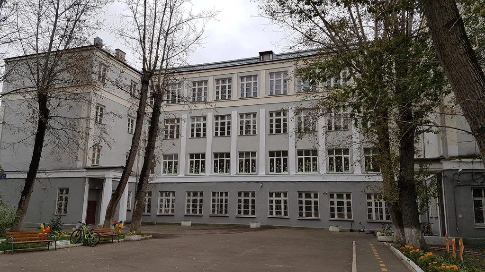

Гимн класса "Б" 18-ой спецшколы, 1963 - 1973
| 
| Идея школьного гимна - Ирина Якимова
Текст гимна - Владимир Макаров
Мелодия "Атланты" - Ал. Городницкий
Редактор - Мария Ильина
|
Когда пошли мы в школу, нам было всем по семь,
Читать, писать учились, и не было проблем.
Спецшкола восемнадцать, четыре этажа,
Внизу подвал со сменкой, два входа, тополя. (2 раза)
Косые переулки до школы доведут,
А мамы молодые потом нас заберут,
И бабушки нас любят, и пирожки пекут,
В чернилах наши руки, но греет нас уют. (2 раза)
La Tour Eiffel et Notre Dame. - Comment ça va? - Très bien.
Париж, увы, от нас далёк, как некий город 'N'.
Мы вновь картавим букву 'r', хотя и не всегда,
Мирей Матье и Джо Дассен навек зажгли сердца! (2 раза)
Учителям не просто уроки объяснять,
Ведь стали мы умнее, теперь мы в классе '5'.
Мальчишки хоть пониже, но зубы есть у всех,
Грызём 'гранит' науки, надеясь на успех. (2 раза)
Уж нет Круглова среди нас, и Кузьмина ушла,
Теперь Илюша и Антон, и Коча к нам пришла.
Мы не боимся повторять, и славим на века,
Суханкину и Зальцмана. Всем говорим - 'Ура'! (2 раза)
Вот стали старше и взрослей, дымок от сигарет,
Решаем, кто куда пойдет, а может быть, и нет.
Звенит звонок, закончен бал: "Школа, нам пора!"
Пусть жизнь иная манит нас, с нами ты всегда! (2 раза)
Когда же грустно на душе и пасмурно в груди,
К Смирнову Александру ты вечером приди,
Девчонки и мальчишки по-прежнему дружны,
И как в далеком детстве, друг другу мы нужны! (2 раза)
Москва,
13 ноября 2022 г.
Главная страница сайта
Страницы друзей "Темного леса"
Последнее изменение страницы 13 Nov 2022
ПОДЕЛИТЬСЯ: